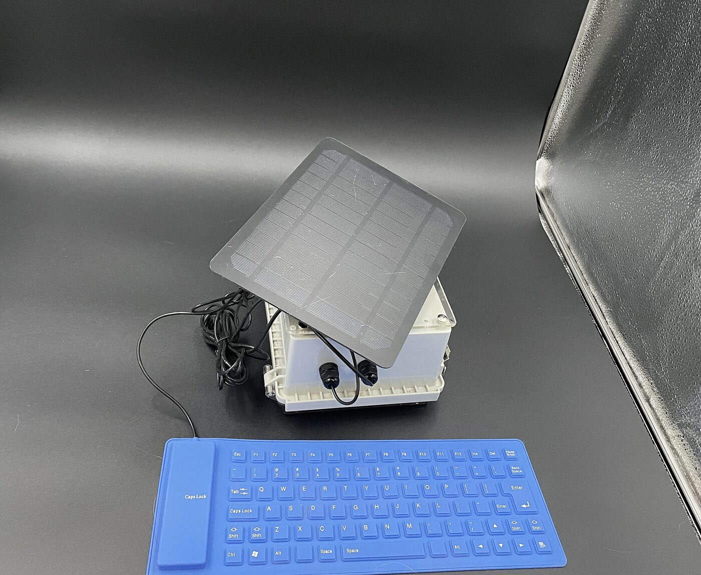

Most emergency gear is built for before. SPRG is built for after.
Your bug-out bag is packed. Your pantry is stocked. Your checklists are printed. Good.
But the moment something actually goes wrong — a hurricane takes out the grid for two weeks, you're three days into the backcountry and someone's hurt, the cell network is down and you can't Google "how to purify water with bleach" — what you need isn't more preparation. You need answers, right now, in your hands, with no battery anxiety and no signal.
That's SPRG.
- 600+ documents, pre-loaded. FEMA guides, military field manuals, wilderness first aid, navigation, signaling, food and water, repair, communications.
- E-ink screen. Readable in direct sunlight. Sips power. Holds the page even when off.
- Solar charging, built in. A 10W panel and an uninterruptible power module mean it charges while you read. No wall outlet, ever.
- IP67 waterproof. Use it in the rain. Drop it in a puddle. Sealed and latched.
- Add your own documents (Prep State). A companion app on your own home WiFi lets you load anything you want — your medications, your family contacts, your boat's manual, your local map cache.
- No internet. No account. No cloud (Emergency State). Nothing to hack, throttle, or shut off remotely — there's no network connection for anyone to reach it through.

Two states, not a contradiction
SPRG works in two modes. Here's exactly what each one means:
- Prep State. You're home, you have power, you're on your own WiFi. This is when you update the library — add documents, refresh content, customize it for your household. Same logic as loading offline maps before a hike or restocking a first-aid kit before a trip.
- Emergency State. Sealed, latched, solar-powered. No WiFi, no cell signal, no internet of any kind — needed or used. It just works.
Nothing about updating it in Prep State weakens the Emergency State promise. They're separate moments, on purpose.
Who it's for
- Backcountry travelers — multi-day hikers, hunters, paddlers, climbers, overlanders. The folks who go where the bars run out.
- Preparedness-minded households — anyone who's lived through a multi-day outage and decided "never again."
- Remote workers and field crews — wildland fire, search and rescue, rural medics, conservation, expedition support.
- Anyone who keeps a "just in case" bag — and wants the knowledge in it to be as serious as the gear.
How it works
- Open it. Latched, sealed, ready. No setup.
- Find what you need. Browse by topic or search. The interface is built for an e-ink screen and a stressed brain — a few clear steps, no animations, no waiting.
- Use it. In the sun, in the rain, at 3 a.m. on a headlamp. The screen holds the page with zero power.
- Set it in the sun. It recharges on its own — a clear day tops it off, and the UPS module keeps it usable while it charges.
Specs (current hand-built edition)
| Display | 7.5" E-ink, 800×480, sunlight-readable |
|---|---|
| Computer | Raspberry Pi Zero 2 W, custom Linux build, low-power tuned |
| Solar | 10W monocrystalline panel, IP67 |
| Power | Integrated UPS / solar charging module, lithium-ion battery, continuous operation while charging |
| Enclosure | IP67 hinged case with stainless latch and clear lid (8.7" × 6.7" × 4.3") |
| Input | Foldable, rollable, waterproof silicone keyboard |
| Storage | ~624 pre-loaded reference documents, expandable via local companion app |
| Connectivity | None required in Emergency State. Local WiFi only, in Prep State, for content sync. |
Honest notes
- This is a hand-built early edition. I'm a solo builder shipping the first units myself. Every device is assembled, tested, and signed by me. You'll get my direct email for support and feedback.
- It uses an off-the-shelf waterproof enclosure right now. A custom, smaller enclosure is on the roadmap once there's enough demand to justify the tooling.
- It is not a tablet. No color, no video, no apps, no games. That is the point.
- This is a reference tool, not a substitute for professional emergency services. Call 911 or your local emergency services when you can reach them — SPRG is for when you can't.
- The library is public-domain/openly licensed reference material, not real-time guidance. Conditions, regulations, and best practices change — treat it as a strong starting point and verify locally when you're able to.
- Patent pending.
FAQ
How long does it run on a full charge with no sun?
Days of typical use. The e-ink screen and Pi Zero 2 W draw very little, and the device idles near zero between page turns. I'll publish hard numbers from real-world testing as units go out.
How long to fully recharge from dead?
A clear day in direct sun. Cloudy and forested conditions extend it; the UPS module is designed to keep the device usable while it slowly tops up.
Can I add my own documents?
Yes — in Prep State. A companion app on your own home WiFi lets you push new documents directly to the device; nothing goes through the internet or a cloud service. In Emergency State, it needs none of that — no WiFi, no signal, nothing.
Wait — doesn't uploading documents mean it needs the internet?
No. SPRG has two states: Prep State — at home, on your own network, with power, when you update it — and Emergency State — sealed and running solely on solar power, when you use it. Updating is something you choose to do before you need it, never something it depends on when you do.
What documents come pre-loaded?
About 624, drawn from public-domain and openly licensed sources: FEMA, US military field manuals, wilderness medicine, navigation, signaling, food/water, repair, communications. Full table of contents available on request.
Why e-ink instead of a regular screen?
Three reasons: sunlight readability, near-zero power draw, and the page stays visible even when the device is off. For a reference device that has to last, nothing else comes close.
Why $300?
That's roughly the cost of parts plus a thin margin for the hand-built run. Future production-run editions may be cheaper or more capable; this price reflects what it actually costs me to build one well, today.
Is this a Kickstarter?
Not yet. I'm running a small hand-built batch first, gathering feedback, and using what I learn to launch a Kickstarter for a refined version later this year. Early-edition buyers will get first access and a discount on the next version.
What if I don't like it?
Refundable deposit any time before shipping. Once shipped: 30-day return for a full refund, no questions.
Who are you?
Nick Pelton — solo founder, builder, and the person who'll answer your email. SPRG is the product. surfMouse LLC is the company.
Reserve an early-edition SPRG
$30 refundable deposit. Counts toward the $300 full price. Limited hand-built run.
Reserve one